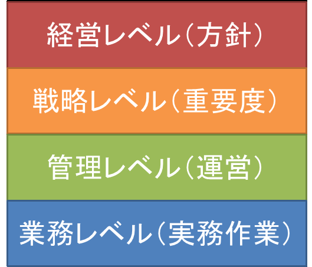
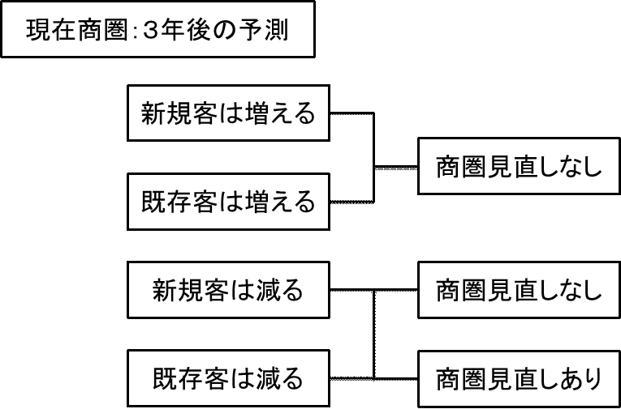
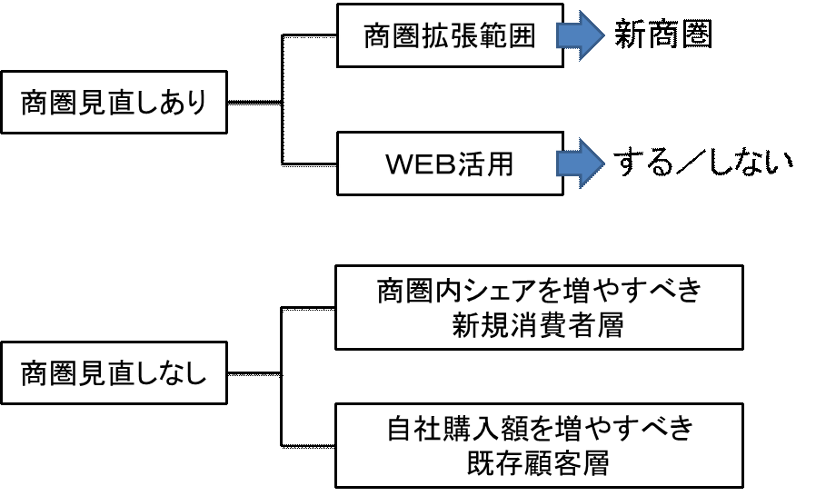

| ６か月で売上を上向きにする教科書： 店舗経営戦略編 眼鏡業界 | |
| 天川 龍介 | |
| (2017) | |
６か月で売上を上向きにする教科書
店舗経営戦略編
眼鏡業界では、眼鏡技術についてのセミナーや勉強会が継続的に実施され、専門技術研鑽には積極的な方が多いのですが、経営戦略等、マネジメント系のセミナーや勉強会は少数で、継続もされていないようです。
マネジメント系と言っても、「遠近両用を売るコツ」とか、「リピートに繋がる接客」とか、わかりやすいのですが、店頭戦術レベルのテーマが多く、中期（３年以上）を見据えた戦略レベルのお話は皆無ではないかと見ております。
これらを階層化してみると、

ごく一般の専門店業界では、経営レベルから業務レベルまで方針が貫かれ、店頭においても、「ウチはこんな店です」と消費者に伝えることを旨としております。例えば、ＡＢＣマートさんは、靴の専門量販という業態ではなく、「ＡＢＣマート」という業態として消費者に認知してもらおうという考え方です。
これを眼鏡業界に置き換えると、ワンプライス・スリープライス業態だけが当てはまると思われます。実際に、消費者に明確に認知されている業態はこのふたつだけです。
継続的に小売企業を発展させるためには、上記の階層ごとに「何をどうする」をキチンと決めなくてはならない。世界中の経営者やコンサルタントで、このことに否を唱える方はごく少数だろうと思います。ある意味、経営の常識です。
眼鏡小売業界で、この常識を実行している企業はどのくらいあるでしょうか？ 売り方も、並べる商品も、販促手法も、出店も、リニューアルもコロコロ変わる・・・行き当たりばったりと言ってもいい企業が多いと想像します。
（ちなみに、経営成熟度６段階で測ると、上記のような企業は下から２番目：初歩的にあたります。）
この様子を消費者から見ると、「何やってんの？」になると思われませんか？
２０年ほど眼鏡小売業界を横から拝見していて、私は「何やってんの？」と思いました。それをハッキリさせるだけで、売上は向上すると思いました。それを具体的に、６か月という期間で実施するには何をすればいいかを書いてみようと思います。
６か月で売上を上向きにする教科書
店舗経営戦略編
小売業なので、お客様がいないと売上には繋がりません。このあたりまえのことを確かめないで前に進むことはできない・・・はずですよね。では、貴社のお客様は、これからの３年で増えますか？ 減りますか？ 予測できていますか？
この、あたりまえと申し上げたことについて、ハッキリと答えてくれる経営者が少なすぎます。お客様に商品とサービスを提供し、満足を得て、続けて購入してもらう・・・このあたりまえの流れが小売業の基本です。その肝心カナメのお客様の数について、見込みがないなんておかしくないですか？
調べましょう
期間は３年、新規と既存に分けて商圏をチェックしてください。この時、提供商品とサービスは現状のままと仮定してください。
現状商圏の把握：商圏の捉え方は様々でしょうが、数年にわたり集客ができているエリアを対象にしてください。店のすぐに近くでも、来店実績がないなら商圏とは言えません。
商圏を固定して、総人口、年齢別人口の推移を見てください。現在新規がとれている層はどのように変化するか？ 現在の既存はどのように変化するか？ シェアが同じならば、母数が減った分、客数は減るのが道理です。
過去の売上データがあれば、自社の未来シェアも想像できます。過去３年間、シェアが落ち続けているとすれば、その延長上で減ると予測できます。データがない場合は単なる予想になります。でも、やらないよりはるかにマシなので、どんな方法を使っても結構です。以下の結論を出してください。
来店いただける
新規は増えるのか、減るのか？
既存は増えるのか、減るのか？
このシンプルな答えをキチンと出すのが第一歩です。ここでの見間違いは致命的ですので、結論は控えめに出すことをお勧めします。もし、両方とも増える見込みならば、商圏見直しの必要がないので、一か月目クリアですが、それで安心してもらっても困ります。より売上を伸ばす方法を学ぶためにも、下記に示す要決定項目を決めてください。

課題は当然ながら減るほうにあります。
次の判断をしてください。客数を維持、増加させるために、商圏を見直しますか？
する／しないを決めてください。何故そうなのか？ 自問自答でかまいません。他者（銀行でも私でもいいですが、全くの部外者で経営を少なくともかじっている人々）に説明できる結論にしてください。これが、最初の中期経営方針項目になります。
商圏を見直すなら、広げるしかないので市場調査を実施してください。どこを広げるか？ を決める調査になります。原則として、来店のしやすさを主に見てください。もうひとつ、物理的な距離を無視する広げ方があります。ＥＣです。ＥＣで売りたくなくとも、遠方からの集客にはＷＥＢを使うしかありませんので、ＷＥＢを使うかどうか決めてください。まとめると、以下の２点です。
商圏拡張範囲を決めてください。これが新商圏です。
ＷＥＢ活用するかどうかを決めてください。
両方ともできないという結論なら、商圏を見直さないのと同じことになります。
商圏を見直さないなら、現状の深堀が必要です。単価を上げる、潜在需要を掘り起こす、シェアを増やす、購入頻度を高める等、方法は様々ですが、商圏全体の消費者に働きかけるのはコストに無理があります。
そこで、最も効率よく深堀できる顧客層・消費者層を見極めましょう。「どこの誰」を深掘り対象にするかを決めてください。これまでの顧客データや販売データをひっくり返すことになるかもしれませんが、ぜひ取り組んでください。
顧客層や消費者層の分類（セグメント）と、対象の絞り込み（ターゲティング）という、マーケティングの基本を学ぶことになります。以下の２点を決めてください。
新規として商圏内シェアを増やすべき消費者層
自社購入額を増やすべき顧客層 （自社購入経験がある消費者を顧客と呼んでいます）
これらが、重要視する顧客層、消費者層となり、中期での戦略目標になります。

Ｔｉｐｓ
客数にこだわる理由のひとつに、皆さんが日頃研鑽されている眼鏡技術、接客技術があります。多くの眼鏡店経営者が、これこそリピート購入の源泉だと思われています。でも、ちょっと考えてみてください。これらを消費者が体験するには、来店いただかなくてはならないはずです。来店客が多く、来店頻度も多くなければ、皆さんの技術は活かせないのでは？
６か月で売上を上向きにする教科書
店舗経営戦略編
来店がなければ、売上を上向かせるのは難しい・・・これは実感としておありでしょう。では、どなたに来店してほしいですか？ 黙って高い商品を買ってくれるお客さんですか？ そんなお客さんは少ないけど、その方々の来店理由は何でしょう？
黙って高い商品を買ってほしい・・・業界外になりますが、ある意味こんな店側のワガママに聞こえる状態を、実現している店舗があります。高級ブランドショップです。価格に関係なく、欲しいと思わせる戦略を何十年にもわたって徹底すると、消費者にそのような行動をとってもらえるのです。
残念ながら、当業界では前例がほとんどありません。原則として、眼鏡や補聴器は「欲しい商品」ではないことが主たる理由です。ましてや、眼鏡専門店は「行きたい店」ではありません。これらを前提に来店理由を作らなければ、売上は上向きません。
ここで質問です。今月の来店客だけでかまいませんので、どんな理由で来店されたのかを想像してみてください。具体的に、この理由で何人と書き出せますか？ もし、よくわからないのであれば、二か月目はそのことだけを考えてください。それほど重要なことです。
とにかく、どんな方（３０代男性・既存客・近隣等の属性が判明していること）が、どんな理由（掛けにくくなったので、調整のために）で、来店されたのかを書き出してください。
結論から先に申し上げます。
この書き出された来店理由が、現在の店舗価値です。どんな販促を打とうが、貴店に消費者からの信頼がなく、任せられないと思われていれば、消費者は来店しません。来店こそが、消費者の明らかな意思表示です。例えば、修理ばかり持ち込まれるとすれば、それが貴店の価値です。
この段階では、「何故、その来店理由なのか？」は考えなくて結構です。とにかく、事実として書き出してください。来店理由の例を書いておきますので、これらに追加していってください。
新規客
引っ越してきて、近くだったから
家族・知人・友人に紹介されたから
チラシ・ＨＰ等の情報を見たから
トラブルがあり、飛び込んだ
他店で満足できず、調べてきた
既存客
古くなったから
見えにくくなったから
壊れたから
チラシ・ＤＭを見たから
調整のため
聞きたいことがあったから
特に理由なし
共通項
○○という商品に興味があったから
価格が知りたかったから
似合う商品を探して
ここで書き出されたことが、現在来店いただいている消費者の貴店に対する需要と期待です。この来店理由の数が増えない限り、有効な来店理由がより多くの消費者に伝わらない限り、来店客数は増えないと考えてください。
ここまでが、いわゆる現状分析です。
店舗内外装、ＭＤ、展示方法、価格構成、接客方法、技術レベル、サービスレベル、販促手法等、日頃気にされていることがほとんど出てこないのが不思議ですか？ 実務レベルはもう少し後で出てきますんで、少々お待ちください。
６か月で売上を上向きにする教科書
店舗経営戦略編
さて、ここまでに得た方針で戦略目標を整理しましょう。
最初の作業：やろうとする戦略目標に、現在の来店理由が寄与するどうかを検討してください。
戦略目標とは、（ここまでのまとめです）
○商圏を拡張して新商圏とする
○集客にＷＥＢを活用する
○商圏内シェアを増加させて新規客を獲得する
○既存顧客の自社購入額を増加させる
意外にシンプルでしょ？ 「この中で、何をやるか」 が決まっていないと先に進めません。いくつでもかまいません、決定してください。できなければ、一か月目に戻ってもう一度考えてください。ここでテキトーに決定すると、この後に実施することがほとんど無駄になるからです。
「これらの戦略目標に、現在の来店理由が寄与するかどうか」を確かめることは、大変重要な作業です。これをうまくできれば、頭の中の霧が晴れるはずです。
例を示します。
新商圏を確立するのに、どんな来店理由が寄与するのか当てはめてみましょう。いくら新商圏と言っても、来店実績が全くないところは難しいと思われます。現在の商圏から外れているのに、どうして来店されたんだろう？ と思われたお客様はどのくらいおられますか？
「そういえば、今かけている眼鏡の不満が多かったなー」 と思い当たったら、少々遠くても来店してもらえるかも？ と考えられませんか？ この来店理由は、使える来店理由です。来店リソースになります。（正式な言葉ではありませんが、来店のネタと解釈してください。）
現在、何らかのＷＥＢ活用（ＨＰ、ブログ、ＳＮＳ）をされていれば、それらによる集客力は把握されているでしょう。それらをより強力にできれば、追加来店リソースになるはずです。
現在、ＷＥＢ活用されていないなら、伸びしろとなりますので、来店リソースとして作れば期待が持てます。
商圏内シェアアップは、現状が細かく把握されていないと明確な答えが出しにくいかも？ 例えば、あるエリアでの新規客は、ある喫茶店のオーナーから勧められた・・・これで年間５名来店がある・・・のように、いわゆるクチコミの発信源までが判明しているとします。これは明確な来店リソースです。ならば、同じような発信源を作ればいいと考えられます。
（ここまで細かくお客様を捉えている量販店は少ないでしょう。個人店の強みかもしれません。）
既存客を購入額や購入数でランキングしたことはありますか？ その傾向を分析したことはありますか？ 未経験なら、ぜひお試しください。「なーんだ、結局ウチってオバサンの店じゃん。」なんてことがわかっちゃいます。オバサンの支持は得やすく、かつリピートも多い。これは、明らかに来店リソースです。
さて、使えそうな来店リソースは見つかりましたか？ もし、見つかったら、最初の実務目標が出せます。「その来店リソースを、より強力にするにはどうするか？」を考え、実際に試してみることです。
重要実務ポイント：有効な来店リソースを、より強力にするにはどうするか？
もうひとつ、戦略目標として設定したいのに、現在の来店リソースが見つからなかった場合です。ひとまず、その戦略目標の相手は誰かを再確認してください。もう一度「どこの誰」を来店させたいのか考えてください。
そして、「その相手を攻略するための来店リソースとは何か？」を考えてください。当然ながら、今持っていない来店リソースです。一から作ることになります。思いつくことも難しいことかもしれません。でも、シツコーク考え続けてください。
もし見つかったら、それが「貴店と言う名の業態名」のヒントになります。
６か月で売上を上向きにする教科書
店舗経営戦略編
前章で、やりたい戦略目標と、現存来店リソースが繋がった方はラッキーです。すぐに動けます。そうでなかった場合、少し遠回りをしてください。（必要で有用な遠回りです）
王道は、戦略目標に合った来店リソースを作る（前述）か、調達（持ってくる）ことです。ただし、かなりハードルが高いので、納得がいくまで考えつくしてください。結論が出ないのに動くことは、かなりの無駄が出るとだけ言っておきます。
もうひとつは、現存する自信のある来店リソースを活かせる戦略目標に変更することです。これは短期的目標をとりあえず立てることです。長期では通用しない場合もありますので、前述の王道は平行して考えてください。
戦略目標が複数の場合は、当然ですが順番を付けてください。今回は６か月という期間を区切っていますので、一番やりたい目標だけにしましょう。
いずれの場合も、戦略目標をひとつ、それと繋がる来店リソースを一つ以上決定してください。これに目標達成期間が付けば、戦略目標策定ができたことになります。
例えば、
戦略目標＝商圏内シェアを増加させて新規客を獲得する／□●２丁目エリアの新規シェアを５％
上げる（客数は２０名／年）
来店リソース＝現在実績のあるクチコミ内容（気軽に相談できる・サービスがいい・品揃えのセンスがいい等）
達成期間＝１年以内
「いつまでに、何を使って、どんな結果を出すか」を、シンプルに決めてください。おそらく、来店リソースに不安が出るでしょうから、多くの来店リソースを検討したくなると思います。ただし、来店リソースを設定した数だけやるべきことも増えます。
最初は、ひとつの来店リソースを確実に機能させるように動かれることをお勧めします。
次に実行計画です。言われれば簡単なのですが、この業界の皆さんが最も苦手とすることかもしれません。いわゆるマネジメント（管理）です。いつまでに何をやるか、実際に誰がどうするかを決め（ＰＬＡＮ）、実施方法を決めて実行し（ＤＯ）、定期的に結果を見直して（ＣＨＥＣＫ）、必要な対策を打って（ＡＣＴＩＯＮ）、目標値を完遂することです。
決めていただきたいことを、エクセルにまとめました。ここからダウンロード して、項目を埋めてみてください。
ＰＬＡＮ：
「いつまでに、誰が、何をするのか？ その目標は何か？」を誰でもわかるように書き出してください。バカみたいと思うかもしれません。個人店の方は、どうせ自分でやるんだから、わざわざ書かなくてもと思われるかも？ でも、書き出してください。この記録を残さないと、同じ間違いを起こすことがあり、改善できません。
ＤＯ：
「何をするか」を実務レベルまで詳細に決めてください。ここで初めて、いわゆる＜
アイデア＞
とか＜
ノウハウ＞
とか＜
コツ＞
を集めることになります。やっと事例が役に立ちます。
例えば、４０歳代女性のクチコミを増やすことがＤＯ項目とします。彼女たちが興味を持つものは？ 話題にするものは？ 実際にクチコミとして広がった内容とは？ 広げるのに有効なメディアとは？ ・・・調べることは山ほどあります。これらのやり方がノウハウです。
ここでは計画なので、何をするか？ を書いてください。
「実際にクチコミとして広がった内容とは？ 広げるのに有効なメディアとは？」を調べる・・・と書いてもらえばかまいません。実際にやるのはこの後です。
Ｔｉｐｓ
事例とかアイデアからスタートしていた店舗運営改善が、めったにヒットしない、うまくいかない理由がホンノリわかってもらえるのでは？ 三か月目までの検討がないからです。
ＣＨＥＣＫ：
何を成功とするか？ 目標値が明確でないとＣＨＥＣＫできません。できるだけ数値で目標設定し、そこに至るまで残りどのくらいなのか？ 達成できそうか？ を測る準備をしてください。
例えば、あるエリアからの新規客を年間１２名増やすとします。ひと月１名なので、わかりやすいでしょう。そして、１か月目、いつＣＨＥＣＫするか？ どんな方法でＣＨＥＣＫするか？ 等を決めてください。
結果が良かろうが悪かろうが、確実にそれらを把握できることが重要です。これができないと、ＡＣＴＩＯＮに行けません。ここで尻切れトンボになります。当業界に限らず、この「やりっぱなし」が改善の芽を摘んでいます。
ＡＣＴＩＯＮ：
実務の中で、最も難しい内容です。何回も同じ失敗をして、何年かかってもいいならナントカなりますが、期限を切られて、その間に確実に改善しろと言われると出来る方は少数でしょう。肝心なことは、短期間で改善策を立案し、実行できることです。結果は運もありますので、当たればよしと思ってください。
理想的には、狙ったとおりにお客様が動き、計画通りの売上が上がることです。これを確実に確かめてください。（ＡＣＴＩＯＮにもＣｈｅｃｋがあります。）
うまくいく手法が見つかれば、それが財産になり、来店リソースになります。たとえ、１勝９敗でも、その１勝が次に役立ちます。ＡＣＴＩＯＮしなければ、負けも勝ちもない＝改善もできないし、価値もそこに生まれません。
（最初は、おそろしくハードルが高いと感じられるでしょう。でも、あきらめずに取り組むと、１年もしないで店は変わります。それだけは保証します。）
重要実務ポイント：計画し、見直し、最後までやりきってください。それを記録してください。
Ｔｉｐｓ
できれば、このポイントでコンサルタントを使ってください。１勝９敗が、３勝７敗になる可能性があります。それが出来ないコンサルタントは切ればいいだけです。
６か月で売上を上向きにする教科書
店舗経営戦略編
さて、ようやく日常的な内容に入ります。
実行計画ができると、いつまでに何をやるかがわかります。ここまで、集客にポイントが置かれていたので、商品とかはどうなるのか不安だったかもしれませんね。その他の事柄は、ここで組み立てます。
基礎になるのが、集客すると決めたお客様の気持ちです。「なんか、乗せられて店に来てみたけど、期待以上じゃないか。これなら検討する価値がある。」 はい、これが肝心です。「買ってもいい」と思わせなくてはなりません。
五か月目は、企画実行した集客策が成功する前提で、お客様を迎える準備を整えましょう。以下の質問に答えてください。具体的にお客様をイメージしてください。その方がどう思うか？ を基準にしてください。
初めて来店される方にとって、わかりにくいポイントはないか？ 例えば、電車を降りてからの出口を間違えるとかなり遠回りになる・・・これでは買う気を削がれます。この機会に、来店経験がない知人友人に、住所のみ、地図のみを渡してわかりにくさをチェックしてください。
店頭まで来られたと仮定して、ファサード（店の前面すべて）がどのような印象を与えるかをチェックしてください。オーナー及び店舗関係者は見慣れているので、第三者的な答えは出せません。これも来店経験のない知人友人をアテにしてください。
店のファサードは、店舗を作る時に決まっているのですが、「そのファサードを、どんなお客様を想定して作ったか？」は明確ではない店舗がほとんどでは？ この機会に見直してください。
店に入ったとします。最初は照明です。明るさ、照らしている範囲、光の色で雰囲気が全然違います。この点は、一度照明のプロに聞いてもらってもいいかもしれません。イマドキ、天井蛍光灯の選択はないと思います。器具の変更を検討すべきでしょう。他が良くても照明でダイナシになる例は多いものです。基礎要素として見直してください。
次に什器です。イメージしたお客様の身長はいくつですか？ 目線はどの高さにありますか？ 見やすいですか？ 取りやすいですか？ 棚や島什器を交換するのは大変ですが、低いのを高くすることは工夫次第です。次回のリニューアル時には、「どんなお客様を想定した什器か？」を見直してください。
やっと商品です。ＭＤ全体を変更しろとは言いません。来店予定のお客様のための商品はキチンと揃っていますか？ （ＭＤの基本は、買上客の想定から入るのが常識ですが、この業界では違うみたいですね。） モノがないなら仕入を検討してください。商品構成、価格構成は当然ながら見直していただきます。
次はＶＭＤです。来店予定のお客様のためのコーナー作り、ＰＯＰ等は揃っていますか？ レイアウトはどうしますか？ 単純にＡポイントに置いて全体のバランスは崩れませんか？ コーナーの高さは？ 幅は？ 的確と言えますか？
最後は販売員自身です。来店予定のお客様に気に入ってもらえる髪型、眼鏡、メイキャップ、服装、靴とは？ 会話をスムースに始めて盛り上げる話題とは？ その話し方とは？
以上を検討して、見つかった課題について、解決策を探してください。ここで事例が役に立ちます。（事例が先ではありません。）
ここまでやっていただければ、課題がかなり明確になります。その課題の解決策を見つけるために、いろんなところに相談できるはずです。コンサル等の外部サービスはこのタイミングで使ってください。
Ｔｉｐｓ
さて、ようやく眼鏡技術の話ができます。ここで初めて技術要素に入れます。技術の優秀さを見せるには、ここまでのことをクリアにしてもらう必要があります。来店に至るまでにそれなりの緻密なプロセスがあり、課題があります。来店には、それらをクリアする必要があると述べました。せっかく店の前までいらしたのに、店員の髪が整えられていなかった、着ているシャツがダサかった、着こなしにセンスがなかった、店頭のゴミが掃除できていなかった、ウィンドウディスプレーにセンスがない・・・こんなことで、そこまでの苦労が吹っ飛ぶんです。あなたの技術は見てもらえない、発揮できないんです。優秀な技術をお持ちなのに売上に繋がらない原因が見えてきたのではありませんか？
６か月で売上を上向きにする教科書
店舗経営戦略編
五か月目で検討いただいたことは、集客できようができまいが、やったほうがいいことで、皆様方の間で話題になる事柄でしょう。でも、決定的に違う点があります。「どんなお客様のために」が主語になっていることです。
当業界での主語は、ほとんどの場合「眼鏡」です。眼鏡については活発に議論なさいますし、情報収集なさいますが、消費者の生活情報となった途端、何分の一かに減りませんか？ 世の中は、とっくの昔に消費者中心に変わっています。マーケティングがわからない企業は生き残れないのが経営の常識です。
このことを、頭でわかっていても実行できていないから売れないんです。
眼鏡市場さんとジンズさんは、「買いやすさ」という、多くの消費者が実感できる来店理由を持っています。その理由で今の位置にいます。これは事実です。消費者は、眼鏡について細かく検討する時間も手間も掛けたくない、でも失敗したくない。だから、価格が固定されている＝被害額がそこまでであると保証されている安全パイを選ぶんです。
来店理由にこだわるのは、マーケティングの基本であり、「何故、自店を支持いただけているのか？」を明確に測れる指標だからです。（この教科書では、一か月目から四か月目が、実際に来店リソースを考える訓練になっています。）
売上を上向かせるための根本的な要素は、自店への来店理由を確立することです。それを、眼鏡ではなく、お客様を主語にして考えてください。このことが、本当に腑に落ち、具体的行動に至れば、売上は確実に上向くでしょう。
以下は事実なので、確認してください。
一人の消費者に支持いただけなければ、二人目はありません。ある顧客層に支持いただけなければ、エリア全体の支持はありません。「誰のための店か」を明確にすることは、その他の消費者を排除することではなく、一定の支持層（ファン）を持つためで、これが経営の基盤になります。基盤もないのに広げるのは無理です。
そして、以下を意識していただきたいです。
現在、売上不振が続いているとすれば、この基盤が揺らいでいる状態のはずです。今一度、経営方針から店頭実務まで、一本筋を通しなおしましょう。そこで考えるべきは、「こんな眼鏡を売りたい」・「こんな技術を提供したい」が主ではなく、「どんなお客様のために」が、主語としてその前に付いたカタチです。
もし、宜しければ、
「○○のために、□□を、△
△
とともに販売したい。」 それは何故で、どのように実現するのかを私に教えてください。その行動が改善への証明になるでしょう。
もし、もう一歩進んでくださるなら、
自店の本質を見直してください。眼鏡小売業は、眼鏡を販売する業態ですが、消費者中心に考えると、眼鏡を掛けることによって起こるすべてのイイコトを提供する視生活サポート業です。コアにあるのは、消費者の視生活全般です。
自動車に置き換えるなら、あるメーカーのキーワードは「走る歓び」です。何で走るかは書いてありません。そして、御存じのとおり、その自動車は大変革期です。エンジン開発技術がなくともクルマは作れる時代になりました。
自動車の提供価値は、「自由に移動する、思い通りに走る」ことです。これを実現するための技術は、エンジン技術だけでなく、他にも方法はたくさんあると示されています。
話を眼鏡に戻すと、
「お客様の視生活を如何に充実させるか？」がテーマであって、その方法は何通りもあると思いませんか？ 自動車のようにＥＶ技術が出ても、今の眼鏡技術にしがみつきますか？ ５年後に、その技術が無くなるとしても。
貴店が提供すべきは、「見える歓びと魅せる楽しさ」です。眼鏡技術はそれを実現するための手段のひとつです。手段が複数あるのはあたりまえのことです。他店にない手段を持てば、それは明らかな優位点ではありませんか？ 貴店にとっての新たな手段とは何かを探してください。
６か月で売上を上向きにする教科書
店舗経営戦略編
ここまでお読みいただき、ありがとうございます。
眼鏡店向けなのに、眼鏡そのものの話や、眼鏡技術の話がほとんど出てこないことを不思議に思われたかもしれません。
理由はあります。
消費者を中心に考えた時、その消費生活は、日々商品や店舗を選択し、購入行動を起こし、金を払って入手し、役に立たせることの連続です。生活に必要な買物は義務であり苦役です。欲しいものやプレゼントの買物は楽しみです。使える金額には限りがあります。
そんな中、眼鏡は数年に一度、義務的に購入検討する難解な専門商品です。
消費者にとって、眼鏡は「苦役」、「わからない」、「できれば買いたくない」を代表するような商品ではないでしょうか？ 消費者の頭の中には、何を買うべきかを書いた買物リストがあります。そのリストの中で、眼鏡が占めるシェアは、おそらく０．１％ もないのでは？
９９．９％ は眼鏡以外のことを考えている消費者に喜んでいただくには、売る側が、「９９．９％ 」を理解し、近づくべきではないでしょうか？
そこで少々短絡的かもしれませんが、眼鏡を売りたいなら、眼鏡に関わること以外を学習し、改善したほうが早道ではないかと考えました。 通常の小売業ならこれが定番だと思われる手順を、眼鏡店用にアレンジして示したのが、この教科書です。
日頃、皆様が考えていることは、消費者にとって０．１％ でしかない。その範囲で、「お客様のために」と言われても、聞いたほうが困るのではないか？ そう思えてならないのです。
今一度述べます。「眼鏡専門販売店」と「視生活のサポートサービス店」とでは、天と地の違いがあると思うのですが、如何でしょう？
最後に
筆者は相談を受けることが商売なので無料ではできませんが、本気であれば応援はできます。問い合わせてみてください。
例えば、この本をテキストにした勉強会やセミナーができると、助言しあうお仲間も増やせると思います。メーカーや卸売のリテールサポートとして、組合等の会員サービスとして御検討ください。
千葉県印西市内野２－
６－
３７－
５０１
合資会社 グラシス 天川 龍介
Mail:ryu@glasys.com
www.glasys.com